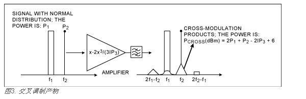
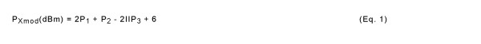
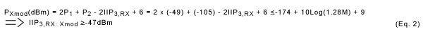
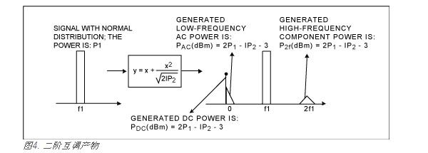
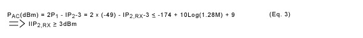
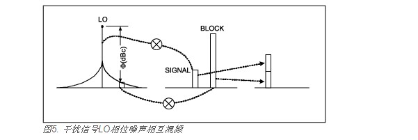
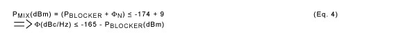

带内阻塞信号对接收器性能的影响主要表现为三种现象：交叉调制、二阶互调制产物以及互混频，下面分三节对其进行讨论。

图3所示为交叉调制现象，它出现在放大器和混频器等非线性元件中。图中，f1信号是具有一定带宽的调制阻塞信号，f2的CW信号是所需的信号。在放大器输出端，需要的信号频谱附近出现了中心在f2的三角形互调产物。这一交叉调制产物通常与元件的三阶非线性有关，既三阶截止点。当阻塞信号具有高斯白噪声正态分布特性时，可以按以下公式来估算交叉调制产物的功率：

ps:公式推导参考资料：AN3737C-如何估算ACPR指标与交叉调制产物
在输入信号也是调制信号的情况下，输出产物的波形是三角波和信号功率频谱密度函数的卷积。由于阻塞信号的特性偏离高斯噪声正态分布，交叉调制产物会减小。当干扰信号是调制后的包络恒定阻塞信号时，交叉调制产物为零。
3GPP TDD标准规定，± 4.8MHz失调时，灵敏度3dB劣化允许-49dBm的调制干扰信号。如果我们认为灵敏度劣化结果仅仅来自交叉调制产物，只要交叉调制产物的功率在灵敏度电平上相对小于接收器带内热噪声功率，就能够达到这一性能指标。假设接收器的噪声指数小于标准规定的9dB，便可以从方程2推出交叉调制产生的接收器三阶截止点。


在输入信号也是调制信号的情况下，输出产物的波形是三角波和信号功率频谱密度函数的卷积。由于阻塞信号的特性偏离高斯噪声正态分布，交叉调制产物会减小。当干扰信号是调制后的包络恒定阻塞信号时，交叉调制产物为零。
3GPP TDD标准规定，± 4.8MHz失调时，灵敏度3dB劣化允许-49dBm的调制干扰信号。如果我们认为灵敏度劣化结果仅仅来自交叉调制产物，只要交叉调制产物的功率在灵敏度电平上相对小于接收器带内热噪声功率，就能够达到这一性能指标。假设接收器的噪声指数小于标准规定的9dB，便可以从方程2推出交叉调制产生的接收器三阶截止点。

注："-3"和调制系数有关。
MAX2392有四种工作模式。在出现较大阻塞信号时，接收弱信号建议使用高增益高线性(HGHL)和高增益中等线性(HGML)模式。对于参考设计的接收器，这两种模式都会测得IIP2,RX ≥ +15dBm，符合要求，并且至少有12dB的余量。
3GPP TD-SCDMA标准并没有明确规定VCO的相位噪声；而是取自其他相关的规范。如前所述，发送器EVM是受发送器VCO+PLL相位噪声影响的参数之一，它对射频设备的相位噪声没有严格要求。接收器灵敏度也和LO相位噪声有关，但即使是在16QAM调制的情况下，对射频设备也没有严格的相位噪声要求。对LO相位噪声有严格要求的两种规范是阻塞和双频互调特性最小要求。这些规范对干扰信号相互混频或者LO边带噪声调制等现象有要求，如图5所示。

正如所讨论的阻塞和双频互调要求，在这些测试情况下，允许接收器灵敏度劣化3dB。我们假设所有的劣化都来自相位噪声相互混频，接收器噪声指数小于规范规定的9dB。我们可以利用下面的公式推算出所需要的LO相位噪声：

阻塞和双频互调测试中的最大干扰功率是从信号中心频率偏移±3.2MHz时的-46dBm。将该值带入上面的公式，在偏移载波3.2MHz时，得到接收器LO相位噪声小于-119dBc/Hz。MAX2392 VCO测得的相位噪声是-129dBc/Hz，符合要求，并且有10dB的余量。
对于四路带外阻塞，LNA之前的SAW滤波器抑制所有的带外干扰，降低其电平以避免出现LNA压缩。由于LNA输出端的阻塞信号电平与混频器IP2和IP3相比已经非常低了，因此不需要在LNA和混频器之间使用SAW滤波器。级间滤波器提供所需的平衡变换器功能，因此，不增加成本就可以获得更多的滤波功能。例如，在±85MHz失调时，规定的阻塞信号是-15dBm。如果SAW提供30dB衰减，LNA的阻塞信号电平是-46dBm (T/R开关有1dB损耗)，接近带内阻塞信号电平，可以采用上面的方法针对IM2和IM3进行分析。测量结果表明，测试每一阻塞信号时，3GPP要求至少有3dB的余量。